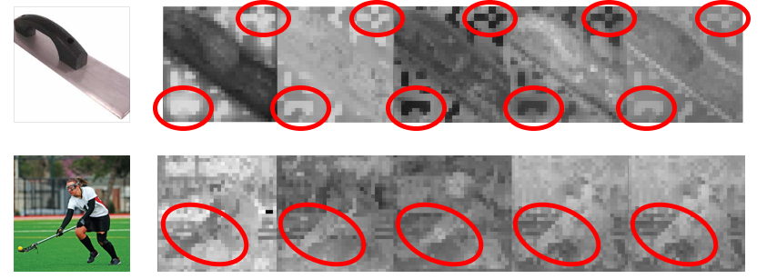
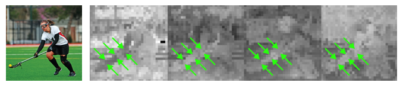
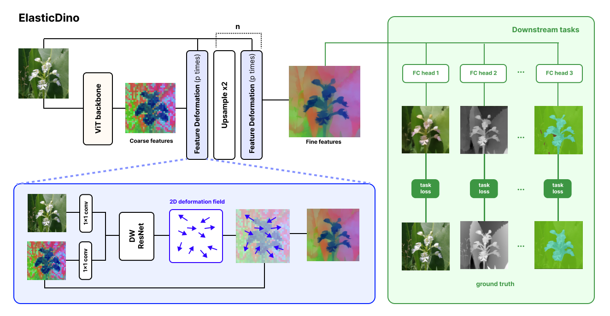

Motivation
DINO features are low resolution and prone to artifacts
Standard ViT backbones operate on image patches, often yielding 32x32 or 64x64 feature grids for images that downstream models need to reason about at full resolution. This introduces positional noise, feature bleeding across boundaries, and extra burden on task-specific decoders.


Method
Task-guided Elastic Deformations
ElasticDino alternates bilinear upsampling with lightweight Feature Deformation layers. Each layer reads the current semantic feature map and the image at the same resolution, predicts a 2D deformation field with depthwise-separable convolutional blocks, and warps the features instead of directly rewriting their values.

Shared Deformations
Each Feature Deformation layer predicts a 2D warp field from the image and current feature map. The same spatial warp is applied to all channels, matching the channel-consistent structure of ViT artifacts while keeping computation lightweight.
Semantic Preservation
The network warps existing features rather than directly rewriting feature values. Sampling from the original feature map preserves backbone semantics, discourages hallucinated task labels, and sharpens boundaries without smoothing away object identity.
Pixel-Level Heads
ElasticDino trains without ground-truth high-resolution DINO features. Instead, simple 1x1 task heads supervise every pixel for RGB, depth, semantic segmentation, normals, shading, albedo, residuals, and intrinsic decomposition.
Because the heads operate independently at each pixel, they cannot hide spatial mistakes with decoder context. The deformation layers must therefore align the frozen semantic features to image structure before the heads can solve the dense tasks.
Results
Full Benchmark Results
ElasticDino is evaluated on semantic segmentation, feature upsampling, depth estimation, and DINOv3 transfer. The complete benchmark tables from the paper are reproduced below, along with runtime and memory measurements.
Semantic Segmentation
Validation Mean IoU for semantic segmentation benchmarks.
| Model | Cscapes IoU ↑ | COCO IoU ↑ | ADE20k IoU ↑ |
|---|---|---|---|
| ElasticDino-L | 0.6875 | 0.6270 | 0.5299 |
| OneFormer-sw-L | 0.6412 | 0.6264 | 0.5109 |
| Mask2Former-sw-L | 0.5986 | 0.6239 | 0.4928 |
Feature Upsampling
Comparison of upsampling methods using the JAFAR benchmark protocol. Bold = best, underline = second best in the paper.
| Method | Semantic Segmentation | Depth Estimation | ||||||||
|---|---|---|---|---|---|---|---|---|---|---|
| COCO | VOC | ADE20k | Cityscapes | COCO | ||||||
| mIoU ↑ | Acc ↑ | mIoU ↑ | Acc ↑ | mIoU ↑ | Acc ↑ | mIoU ↑ | Acc ↑ | δ1 ↑ | RMSE ↓ | |
| Nearest | 56.17 | 76.97 | 76.41 | 93.80 | 37.27 | 71.91 | 54.05 | 90.36 | 58.08 | 0.70 |
| Bilinear | 59.03 | 79.07 | 80.70 | 95.17 | 39.23 | 73.69 | 59.37 | 92.47 | 59.92 | 0.66 |
| FeatUp | 60.10 | 79.95 | 81.08 | 95.32 | 38.82 | 73.74 | 56.06 | 91.86 | 61.69 | 0.64 |
| LoftUp | 61.62 | 81.11 | 84.18 | 96.22 | 41.51 | 75.41 | 62.13 | 93.53 | 58.01 | 0.68 |
| JAFAR | 60.32 | 80.30 | 84.19 | 96.18 | 40.16 | 74.39 | 61.58 | 93.45 | 60.05 | 0.65 |
| AnyUp | 60.68 | 80.59 | 83.81 | 96.13 | 40.39 | 74.76 | 60.99 | 93.37 | 60.65 | 0.64 |
| ED (ours) | 62.72 | 81.74 | 86.00 | 96.78 | 42.10 | 76.00 | 61.33 | 93.44 | 64.14 | 0.57 |
DINOv3
Comparison of AnyUp and ElasticDino over the DINOv3 backbone using the JAFAR benchmark protocol.
| Method | Semantic Segmentation | Depth Estimation | ||||||||
|---|---|---|---|---|---|---|---|---|---|---|
| COCO | VOC | ADE20k | Cityscapes | COCO | ||||||
| mIoU ↑ | Acc ↑ | mIoU ↑ | Acc ↑ | mIoU ↑ | Acc ↑ | mIoU ↑ | Acc ↑ | δ1 ↑ | RMSE ↓ | |
| AnyUp | 30.03 | 57.88 | 23.66 | 76.46 | 13.00 | 53.99 | 19.52 | 81.18 | 54.81 | 0.77 |
| ED (ours) | 64.04 | 82.43 | 86.26 | 96.89 | 44.57 | 77.03 | 62.91 | 94.03 | 61.10 | 0.62 |
Runtime and Memory
Run time comparisons of ElasticDino with competing feature upscaling works over DINOv2. Parameter counts are omitted.
| Metric | ED (ours) | AnyUp | LoftUp | JAFAR |
|---|---|---|---|---|
| Avg Time (fw pass) ↓ | 186.32 ms | 762.82 ms | 747.29 ms | 318.05 ms |
| Peak mem (fw pass) ↓ | 923.01 MB | 1652.09 MB | 8310.90 MB | 7337.48 MB |
Qualitative Results
Additional examples from the paper show ElasticDino producing sharper dense predictions and cleaner high-resolution feature maps across segmentation, depth, and feature upsampling comparisons.
Slide 1 of 4: Feature PCA comparison
Citation
@misc{mizrahi2026elasticdino,
title={ElasticDino: Dense Semantic Features using Elastic Deformations},
author={Mizrahi, Ulysse and Zaretzky, Sean and Bermano, Amit and Danon, Dov},
year={2026}
}